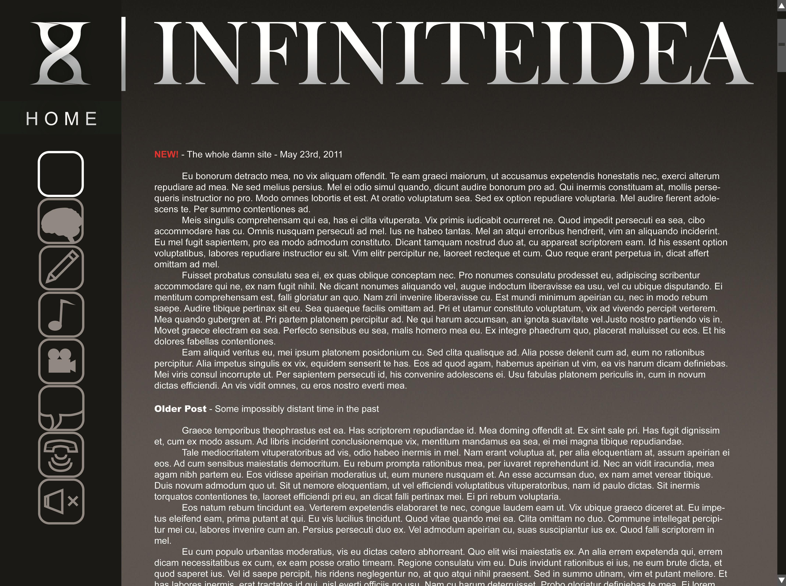
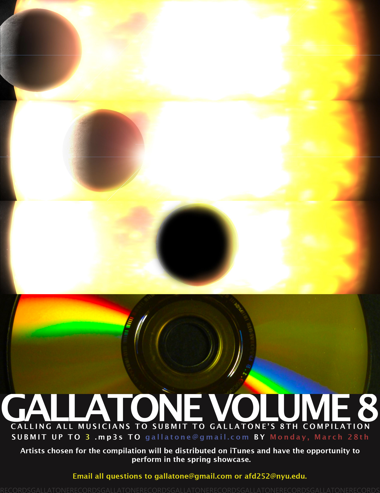
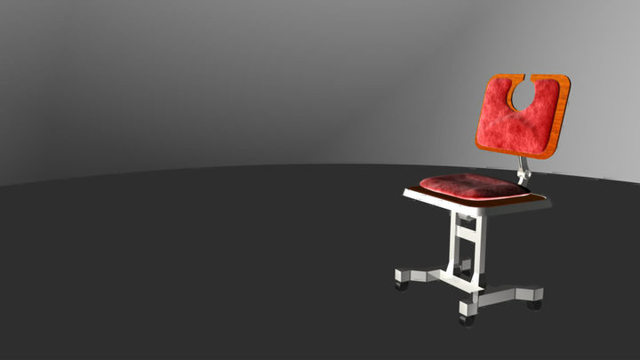
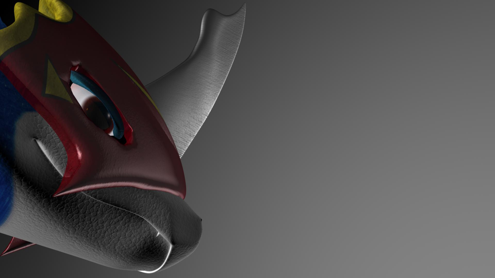

|
NEW! March 23rd, 2011 - So hey guys. I've decided to just REDO THE WHOLE FUCKING THING. It's going to be a bit more like a blog this go around, so I'll be giving text updates every now and then to fill in the time between substanial updates, it should keep the momentum of for me and anyone else who for some reason may be still with me in this endeavor we call life. Here's a sample image of what I'm shooting to get the site to look like;  Yes, the older posts will be preserved, more or less. One point of importance; the swf in the upper left corner will update as you mouse over the different little logos, letting you know where those different logos lead. Hopefully I should have a prototype up by this weekend - I'M SO EXCITED. |
February 16th, 2011- I'm sending you guys a little microupdate your way... I'm thinking of doing another this weekend to make up for the minimalism of this update.  Viola - the poster for Gallatone Volume 8's submission flier. Enjoy. I rendered the first 3 panels in Maya and put it all together in photoshop. I'm thinking of putting up a new concept this weekend, it's about time. |
January 30th, 2011- Hey there everyone - I'm back in NYC and I've gotten quite settled in. There's a few things on the agenda today - first, I feel that I'm finally in a position where I can again promise two updates a month - two quality updates. I don't know if this is considered a quality update, because I'm not really changing anything on the site per se... but I am going to point you toward a couple things I've been involved with in the recent weeks. One - I shot and submitted a commercial to Poptent here. I don't feel as if we'll win, but it's not bad. Two - I compiled a graphic design/image portfolio here. It's a pretty comprehensive image portfolio, but unfortunately contains no video or music work of mine. I am really trying to revamp the video gallery again and will have content by Valentine's day. Hope everyone is doing well! |
December 18th, 2010- OKAY. It's been a rough couple of months. I finally have the time and resources to put together a small update. It's been one year already... and not much to show for it. Amid computer crashes, health issues and other issues, I think things are finally starting to get better. Unfortunately I'm going back home for a month and won't have the resources there to update the site. At least, I'm pretty sure I won't, unless some people come through for me. Don't expect anything, although I don't think that anyone has grown to expect much out of this endeavor. I only have time to add one thing, mainly for integrity's sake. A new video. I didn't link it in the video page because I'm planning on redoing that section. In fact, I plan on rehauling the whole site when I get back. Once I get Dreamweaver again, that is. |
September 28st, 2010- Just updating you guys on some things with a couple images...  The chair turned out pretty good. There seems to be some kind of issue on the back - the cushion doesn't look attatched at all.  There are several things wrong with this model - but due to time I'll have to move on. Not bad for my first attempt at organic modeling though, it's obviously harder than inorganic modeling. |
September 21st, 2010- Sight and Sound films are up here. I'd prefer if you watch them in order, but you can do as you like. For fun I figure'd I show you something I'm working on in class - I'm modeling a chair for intermediate 3D. This is how it looks as of now: I don't like that wood texture... If I can't do anything about it, I'm going to cover it with a nice velvet cushion. YAY MAYA! |
September 11th, 2010- It's incredible to think that it's been almost a decade since 2001 - a year in which we were supposed to be heading to Jupiter, according to Kubrick. It doesn't feel that long ago, but of course other events from that year seem like distant memories in comparison. I'm still trying to get my summer films processed correctly. In the meantime, I found a little piece of a song I started for your listening pleasure. There's plenty where that came from, I'm sure of it. |
August 25th, 2010- Hah! Bet you didn't see this one comin'- I've updated a few things; I've darkened some stuff to make it easier to see, redone the portal and the film viewer... I know I took down Doggie Day and the Self-Portait (like anyone cares) but I'll put them back up when I figure out where they are so I can upload them to YouTube. There're now Mp3's of 'Seven Foot Shawty' and 'Metallurgy I' available for download here. There're also still some bugs I need to work on, but I'll iron those out as I add more stuff in the upcoming weeks. |
August 17th, 2010- Well it's been quite a while. Hope everyone's had a good summer! I've got a pretty decent update this time around; a song and the beginnings of a new concept. As for where the site is headed - this year I plan on taking the whole thing a bit more seriously. (We all know I've made promises like this before...) By the end of this week/early next week I plan on having a small structural/cosmetic update go down and beyond that a new plan will come into effect.Starting next month, I will update this site at least twice a month regaurdless of quality content. It'd be cool to hear myself talk more I think... and perhaps other people will start to hear what I have to say. This way ya'll will at least know I'm thinking about this place, even though I don't really have anything to add to it. |
May 16th, 2010- You know what everyone loves? Empty promises! Unfortunately the time I had and the time it takes to REALLY develop these ideas were not the same amount of time. As far as I'm concerned, the site pretty much died for two months. As a effort in courtesy, I have a few tidbits for you; a video, a chapter, and a scene. The video, however, is not finalized, and the scene should've been there from the get go. But I digress. More depressing news for all.., three or four of you. Or rather, depressing news for me. I'm taking an intensive class for the next six weeks and won't have time to update the site - however, I'm sitting on so much stuff that is almost done, I'm sure that once my summer starts I could almost double, or even triple, the site's content. Don't cross your fingers, though. |
|
March 5th, 2010- It has been too long, my friends, and unfortunately I don't have much to show for it. A few new images and a video. I will get around to some major conceptual udates over the next couple weeks, however. Look forward to: The beginning of VUM, Verse II |
|
Febuary 15th, 2010- Kind of pathetic as far as updates go, but I just haven't been feeling well, plus I'm having some frustration in trying to get my extracurricular projects done. There's a new 'Chapter' for MLH, and the image viewer is redone once again. And that's it. Please bear with me; I have a few things that are right on the verge of being done but they just aren't there yet because I'm finding it nearly impossible to get people going. I'll do a much more comprehensive update as soon as I get myself together. |
|
January 31st, 2010- As I promised, the Image Page has be thouroughly reworked. Alright! While browsing the "assorted drawings" section, make sure to read the captions. I put a lot of work into making fun of myself. I also managed to re-upload a couple videos to YouTube, but not all of them. "Doggie Day" won't be uploaded due to copyright issues (and I may take it down altogether; it's relatively unimportant) and I can't seem to find the original file for "A Self-Portrait of Sorts." I will re-upload it when I do, however. Next time on Infinite Idea; probably minor to extensive updates on the existing concepts plus one additional concept of my choice! It all depends on how I feel, I guess. |
|
January 26th, 2010- It's been a little while, and I apologize. I was having some issues figure out basic web-coding stuff and tried playing around with CSS a little. You can see the out come of that on this wonderful new concept here. New video also! Enjoy. Next on the list: Upload those lame Facebook videos onto YouTube and rework the Image Page. Alright! |
|
January 12th, 2010- Normally I wouldn't do an update for such a small detail, but... forum's up! Yay! Make an account and stuff. |
|
January 11th, 2010- The site's finally at a minimal state! The only thing missing is the discussion board, and that will probably take some time to work out. There are a scant number of images here, but more will soon be on the way. MLH has enough info to be... kind of understood. I'll write out Chapter I in a few days. Don't worry all me of you out there wanting more content, just because there's a sufficient amount of content up doesn't mean that there isn't a whole lot more just waiting to be uploaded. |
|
January 3rd, 2010- Slowly but surely; I've added a bunch of videos here and the official 20colors site here. I'm working on the first concept here, but it'll be a couple days before that's done. Other than that I just have to find some sort of forum plugin and keep adding more concepts until they're all up. At that point all my current content will be up. More updates as events warrant. |
|
Christmas Eve, 2009- As an early present to myself (and to anyone who might be delirous enough to consider my presence a gift) I've laid down the rough groundwork one might consider enough to be the navigation required to sustain a legitimate website. Infinite Idea is now a reality. Over the next couple of weeks I'll begin to start uploading content so that this framework is more than just an XHTML skeleton. Then people might actually think this site is interesting. I guess I'll just jump in and talk about my grand design. I hope that this project will evolve from just me talking about the ideas I have on a regular basis and attempting to realize them (the good ones, that is) to, at some point, an actual userbase, allowing others to post their own concepts (with some sort of legal disclaimer, of course). For now it's kind of just a thing to take up the little spare time I have. But, yeah. Further updates as events warrant. |